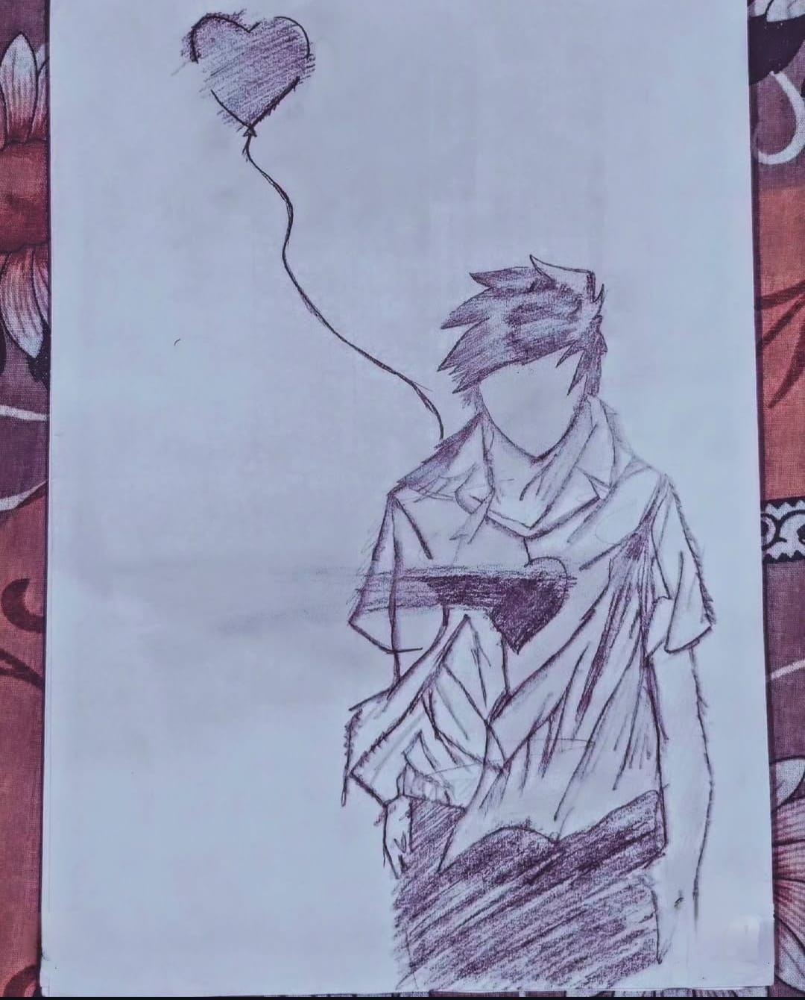

Broken Boy

Medium: Pencil Art
Year: 2023
This Artwork Represents Broken Boy In A Detailed Pencil Art Style,
The Broken Boy Artwork Deeply Expresses Pain, Silence, And Emotional Struggle, With Subtle Details And Powerful
Imagery That Symbolize Inner Battles, Lost Innocence, And The Quiet Strength Of A Soul Healing Through Suffering.